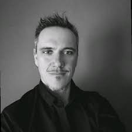

Des profils complémentaires, un même engagement : mettre l’ingénierie au service de la vie et du secours.
Sandra GUERRIR
Présidente, Associée principale
Vision stratégique et engagement humain. Sandra pilote la direction générale et assure la représentation institutionnelle d’IBF.
Magali NEVEU
Directrice Administrative et Financière
Rigueur et clarté. Magali veille à l’équilibre financier et à la structuration administrative des projets innovants d’IBF.

Cyrille LECROQ
Directeur Général, Responsable R&D
Ingénieur R&D passionné, Cyrille conçoit et pilote les projets technologiques d’IBF. Il est à l’origine de StétoClear, RhizOs et SymbIoT.

Théo XAVIER
Développeur Web
Théo assure le développement des interfaces et des connectivités web, contribuant à l’interopérabilité et à la fluidité des systèmes IBF.